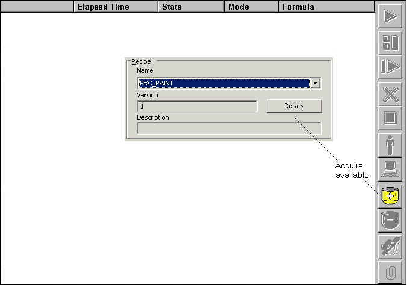
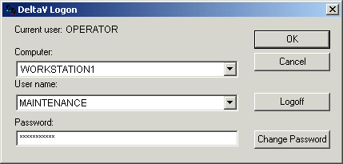
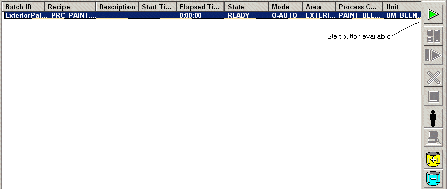
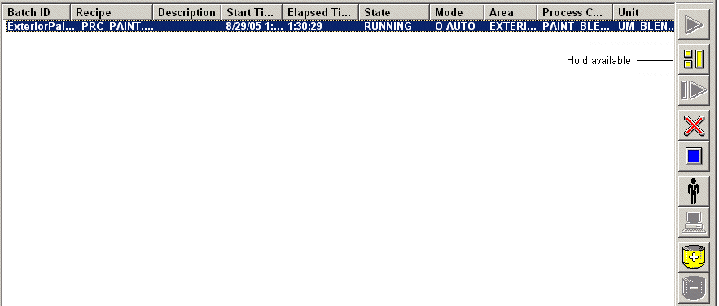
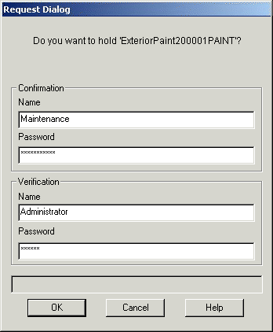
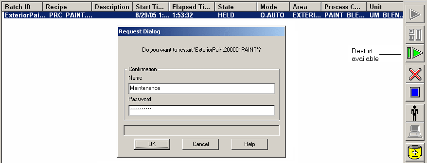

Manual phase control security example
The following example shows one scenario of how to effectively use the manual phase control security. This is only one scenario, given as an example and it may or may not fit your situation.
The first element in this example is the user security and how it is defined. For our purposes, the BATCH_PHASE_CONTROL function has been re-assigned to a user-defined lock called MANUAL_PHASE_CONTROL. The user group OPERATOR has a key to the BATCH_OPERATE lock, but not to the MANUAL_PHASE_CONTROL lock. The user group MAINTENANCE has the key to MANUAL_PHASE_CONTROL lock but does not have the key to the BATCH_OPERATE lock. In other words, the OPERATOR user can acquire, run, and release a batch, but cannot take manual control of the phase. The MAINTENANCE user can run a batch in manual control, but cannot acquire or release a batch.
The BATCH_ACTION_VERIFY function has also been re-assigned to a user-defined lock named VERIFY_RIGHTS. The key to the VERIFY_RIGHTS lock is only given to the SUPERVISE group.
In our example, a maintenance person is needed to step through the batch manually to troubleshoot a problem in the phase.
The operator logs in and acquires the batch.

The maintenance person logs in next and starts the batch manually.

Then the maintenance person can run the recipe.

The batch is monitored as it runs. At the point where the maintenance person sees the problem, he issues a Hold.

Since Holds have been configured as a confirm and verify action, the person with the BATCH_ACTION_VERIFY function key (SUPERVISE group) must verify the Hold command. This is not the maintenance person, since DeltaV security will check for the key to the VERIFY_RIGHTS lock. The MAINTENANCE group does not have that key, only the key to MANUAL_PHASE_CONTROL, and the OPERATOR group only has the key to the BATCH_OPERATE lock. The user must be a member of the SUPERVISE group to verify the Hold command request.

After the batch has been held and the problem resolved (for example a unit not being released properly), the maintenance person issues a Restart.

The restart command has been configured as a confirm action. Verification is not required. Therefore, the maintenance person can confirm his Restart command.